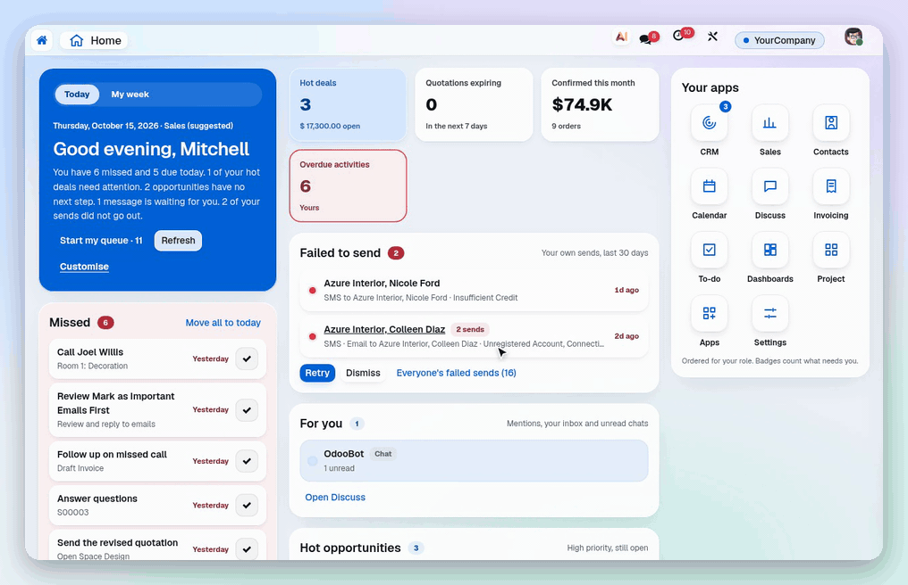
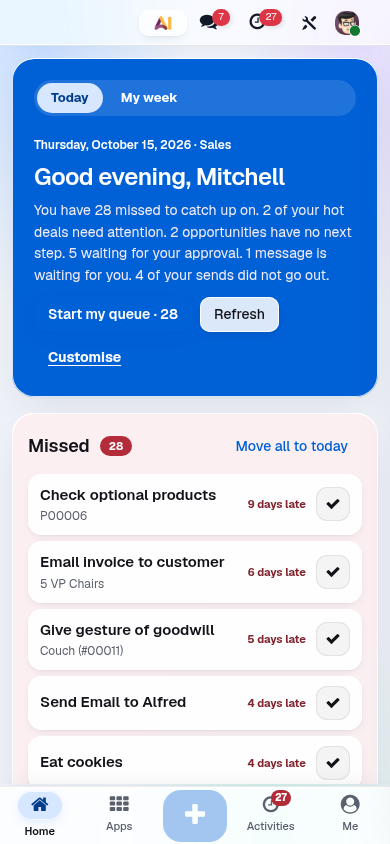

Your whole day, on one screen.
Missed and today, approvals, failed sends, your numbers and your apps.

Know what the end of the day looks like at 9 a.m.
Odoo 19 · Community and Enterprise · needs the Backend Theme Engine and a look such as EOD
Every person starts on a Home made for their role: what was missed, what is due today, what waits for them. Start my queue then clears it one task at a time.
Missed and today, approvals, failed sends, your numbers and your apps.
Every call, e-mail and follow-up on one focused card, closed with a note.

The same Home, built for the thumb.

Get the whole experience with EOD Suite: the EOD look, Workspace, Home and Focus, and Share on WhatsApp in one install.